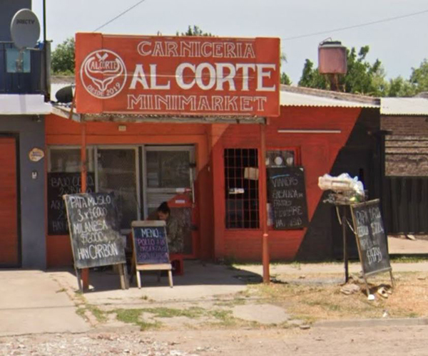

Quiénes somos
En La Pukona celebramos la pasión por las hamburguesas al estilo retro americano con un toque único y local. Fundada con el sueño de traer un sabor auténtico a nuestra ciudad, La Pukona nació en un pequeño local de barrio, donde cada hamburguesa era una obra de amor y sabor.
Hoy seguimos con esa misma energía, sirviendo comida deliciosa, con ingredientes frescos, y manteniendo vivo el espíritu de los diners de los años 50. ¡Te esperamos para que vivas la experiencia Pukona!